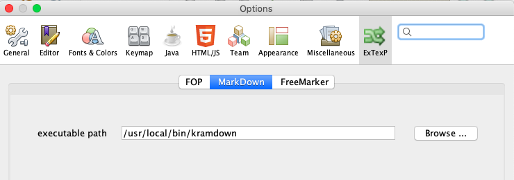

21 May 2022
… more to added when first version is released …
To enable all Extexp functionality, additional software needs to be installed:
Markdown: it is recommended that the kramdown processor is used to process markdown. Kramdown can be downloaded from its website. Just follow the instructions on the install tab. Once installed, Extexp needs to know about kramdown’s location. By using the NetBeans preferences window and selecting the Extexp options panel and then the markdown tab, the path to the kramdown executable can be defined. \ 
FOP: install the latest version of FOP and then use the same process as was used for markdown (Extexp options panel/FOP tab) in order to define the location of the executable script for FOP.
FreeMarker: while FreeMarker software is already installed, it is necessary to define the root of the users file system where FreeMarker templates are stored. This defaults to a OS specific value (“/” for MacOS and LINUX, or "c:" for Windows). If this needs to be changed for your workstation, it can be configured in the preferences window (Extexp options panel/FreeMarker tab).
Extexp is designed for extendability. At the simplest level the External command runs any executable to process textual data.
However to allow a developer to completely integrate new executors into the processor it is possible to create an additional NetBeans module which adds one or more executors, with full integration (parameters, in-memory file store, Preferences URI, and visual display) with Extexp. Details for creating such an extension can be found here.